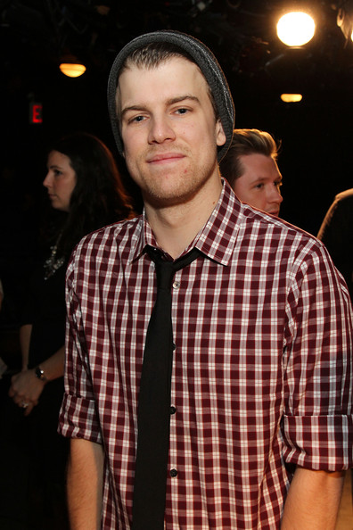
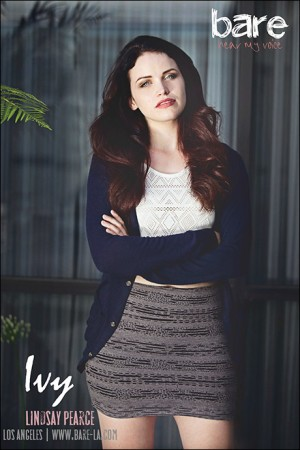
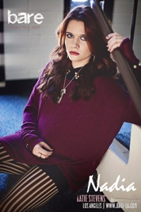

Home
Falsetto
The heathers
Bare: A Pop Opera, is a rock musical by Jon Hartmere and Damon Intrabartolo, lyrics by Hartmere and music by Intrabartolo. The story focuses on two gay high school students Jason, and Peter and their struggles at their private Catholic boarding school.
Jason McConnell is one of the male leads in bare a pop opera. Jason is St Cecilia's Boarding School's golden boy, he has a hard time coming to terms with the fact that he is gay.
Peter Simonds is one of the male leads in bare a pop opera. Peter is Jasons roomate, he strugles to deal with his hidden relationship with Jason.

Ivy Robinson is a female lead in bare a pop opera, she is in love with Jason, their complex relationship leads to a dramatic song.

Nadia McConnell is a female lead in bare a pop opera, she is in Jasons sister. She despises Ivy for having everything fall at her feet.